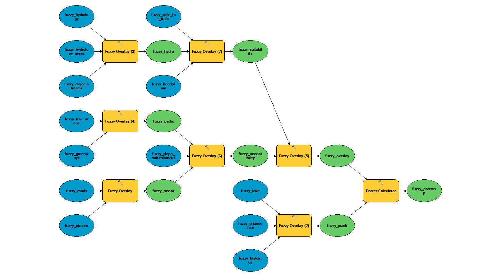
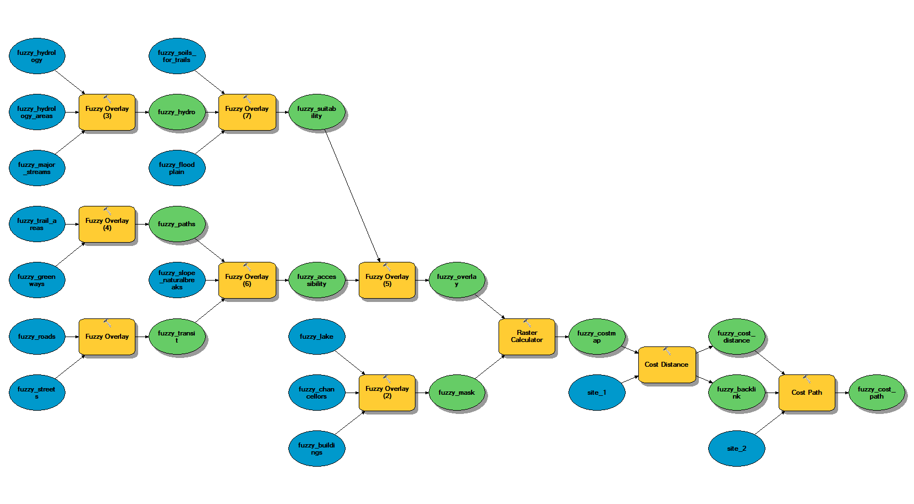

Fuzzy overlay analysis
Data
Download lake_raleigh.gdb, scratch.gdb, conversion.gdb, reclassification.gdb, membership.gdb, and fuzzy.gdb from ClassStore
Setup
Turn on the Spatial Analyst Extension
In the Customize menu Select 'Extensions…' Check the 'Spatial Analyst'
Geoprocessing options
In the Geoprocessing -> Geoprocessing Options menu Check the 'Overwrite the output of geoprocessing operations' Uncheck 'Background Processing -> Enable'
Environment settings
In ArcToolbox Right click in the white space of the ArcToolbox pane and select 'Environments…' Set 'Workspace -> Current Workspace' to 'lake_raleigh.gdb' Set 'Workspace -> Scratch Workspace' to 'fuzzy.gdb' Set 'Processing Extent -> Extent' to 'Same as layer lake_raleigh_dem' Set 'Processing Extent -> Snap Raster' to 'lake_raleigh_dem' Set 'Raster Analysis -> Cell Size' to 'same as lake_raleigh_dem' Check 'Raster Storage -> Pyramid -> Build pyramids' Set 'Raster Storage -> Pyramid -> Pyramid resampling technique' to 'NEAREST' Set 'Raster Storage -> Resampling Method' to 'NEAREST'
Perform fuzzy overlay analysis
Create this model:

Compute the least cost path
Create this model:
